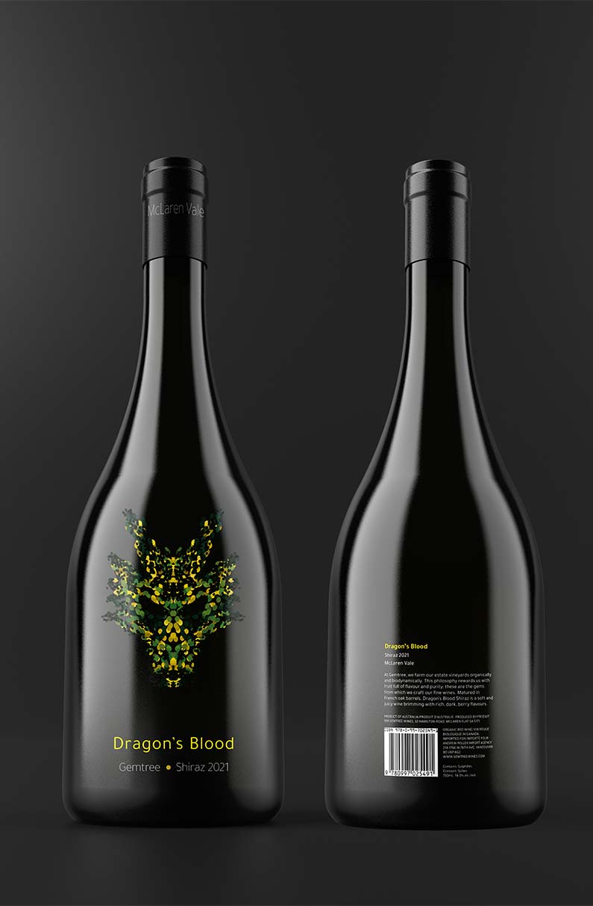
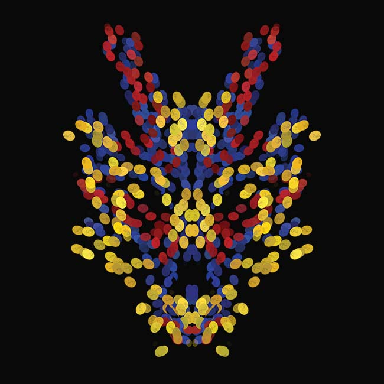
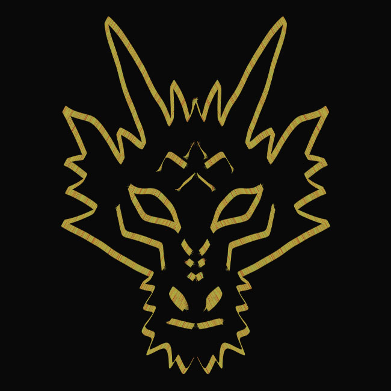
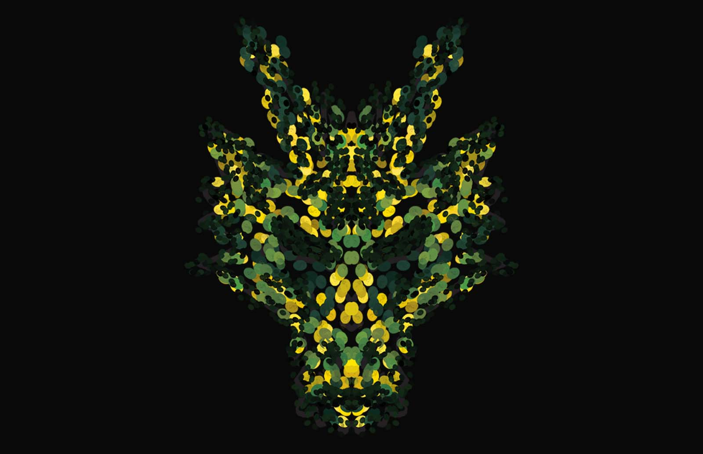

Redesign a packaged beverage.
The bottle needed to feel organic, but stand out against the other wine bottles on the shelf. It must have a look that represents the brand❜s ideals.
The dragon is drawn with dots as an homage to Indigenous Australian styles. The dots create a look of leaves, connects to the name "Dragon❜s Blood," as that is a type of sap from trees.



